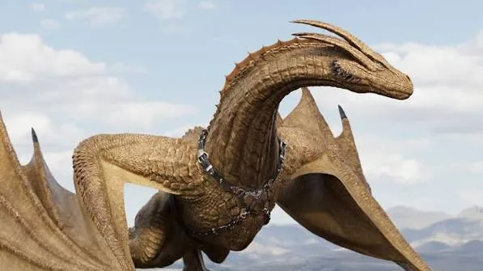
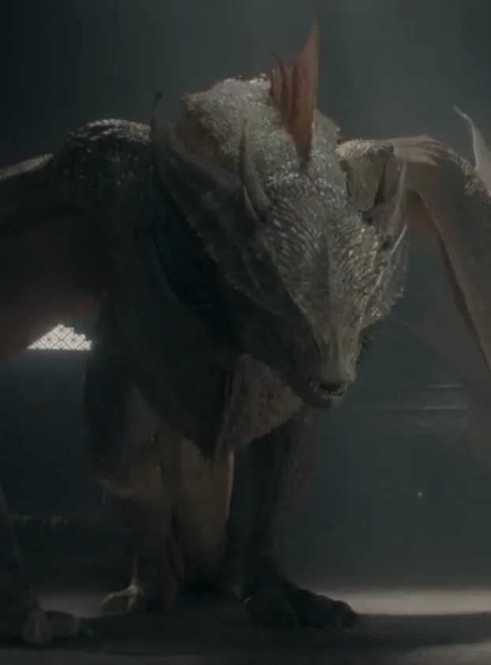

Syrax
Rider: Rhaenyra TargaryenGolden and enormous, Syrax has spent decades as more of a status symbol than a warhorse — until the war forces her into the sky as the mount of a woman fighting for her own crown.
VIEW DETAILS ↗more dragons than Westeros would ever see again
This is the war that proved dragons weren't an unbeatable weapon — they were just another thing that could be turned against its own family. Most of the dragons below don't survive it.

Golden and enormous, Syrax has spent decades as more of a status symbol than a warhorse — until the war forces her into the sky as the mount of a woman fighting for her own crown.
VIEW DETAILS ↗Blood-red and serpentine, nicknamed the "Blood Wyrm." Old, scarred, and vicious in the air — much like his rider — Caraxes becomes one of the most feared sights of the entire war.
VIEW DETAILS ↗The oldest and largest living dragon by far, a survivor of the original conquest a century earlier. Whoever rides Vhagar effectively rides the single strongest weapon left in Westeros — and Aemond takes her by force.
VIEW DETAILS ↗Called the "Red Queen," fast and fierce despite her age. Rhaenys and Meleys make one of the war's boldest single moves — flying alone into a battle everyone expects them to avoid.
VIEW DETAILS ↗
Pale gold and, by most accounts, the most beautiful dragon of his generation — a fitting mount for a king obsessed with how his reign looks, right up until a battle leaves him grievously wounded.
VIEW DETAILS ↗Pale blue and ancient, bonded to a queen who wants no part of the war being fought in her family's name. Dreamfyre spends most of the conflict grounded — much like her rider's say in any of it.
VIEW DETAILS ↗A century and a half later, only three dragons remain in the entire known world. Here, there are over a dozen — which is exactly why this war is remembered as the moment dragons stopped being a Targaryen advantage and started being a Targaryen liability.